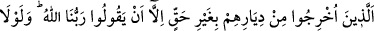
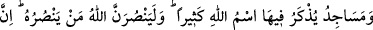
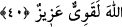
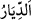
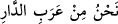
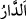
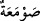
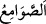
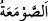
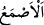

40. Onlar, başka değil, sırf «Rabbimiz Allah’tır» dedikleri için haksız yere
yurtlarından çıkarılmış kimselerdir. Eğer Allah, bir kısım insanları (kötülüklerini)
diğer bir kısmı ile defedip önlemeseydi, mutlak surette, içlerinde Allah’ın ismi bol
bol anılan manastırlar, kiliseler, havralar ve mescidler yıkılır giderdi. Allah,
kendisine (kendi dinine) yardım edenlere muhakkak surette yardım eder. Hiç
şüphesiz Allah, güçlüdür, galiptir.
“Onlar, başka değil, sırf «Rabbimiz Allah’tır» dedikleri için haksız yere”
çıkarılmayı hakettikleri bir sebep olmadan “yurtlarından çıkarılmış kimselerdir.”
Şeyhzâde der ki: “Allah, ashabın zulme uğramaları sebebiyle savaş konusunda
kendilerine izin verildiğini beyan edince bu zulmün ne olduğunu bu âyet ile açıkladı.
Onların yurtlarından (__WORD__) maksad Mekke-i Muazzama’dır. Beldelere “__WORD__ adı
verilir. Çünkü işleri görmek için orada dolaşılır. Mesela Bekroğulları’nın beldeleri için
“Diyâru Bekr” denir. Mekke çevresindeki Araplar da o bölgenin Araplarından
olduklarını kastederek: “__WORD__ derler. Râğıb der ki: “__WORD__, ev demektir.
Böyle denmesi çevresi duvarla çevrildiğindendir.”
Onların Mekke’den çıkarılmalarının sebebi tevhidden başka bir şey değildi. Halbuki
tevhidin onların oradan çıkarılmalarına ve sürülmelerine değil orada yerleşip
kalmalarına sebep olması gerekirdi. Fakat bu söz zâhir anlamında değil Nâbiğa’nın şu
şiiri tarzında söylenmiştir:
Onlarda hiçbir kusuru yok, şu kadar var ki kılıçlarında
Nice bölüklerle dövüşmekten körlük var
“Eğer Allah, bir kısım insanları (kötülüklerini) diğer bir kısmı ile” her asır ve
zamanda insanların mü’minlerini kâfirlere hâkim ve musallat kılmak sûretiyle “def ’edip
önlemeseydi, mutlak surette,” ruhbanlık için olan “manastırlar,” İsa (a.s.) zamanında
hristiyanlara âid olan “kiliseler,” Mûsâ (a.s.) şerîatının geçerli olduğu günlerde
yahudilere mahsus “havralar ve içlerinde Allah’ın ismi bol bol anılan” yâni çok
zikredilen veya çok vakit zikredilen, Muhammed (s.a.)’in şerîatı günlerinde “mescidler
yıkılır giderdi” Yâni müşriklerin istîlâsıyla harap olurdu.
“__WORD__, “__WORD__ kelimesinin çoğuludur. Ruhbanların ibadet ettiği ve ibadet için yalnız
kaldıkları yerdir. Râğıb der ki: “__WORD__ Tepesi bitişik yüksek ve sivri binadır. “__WORD__